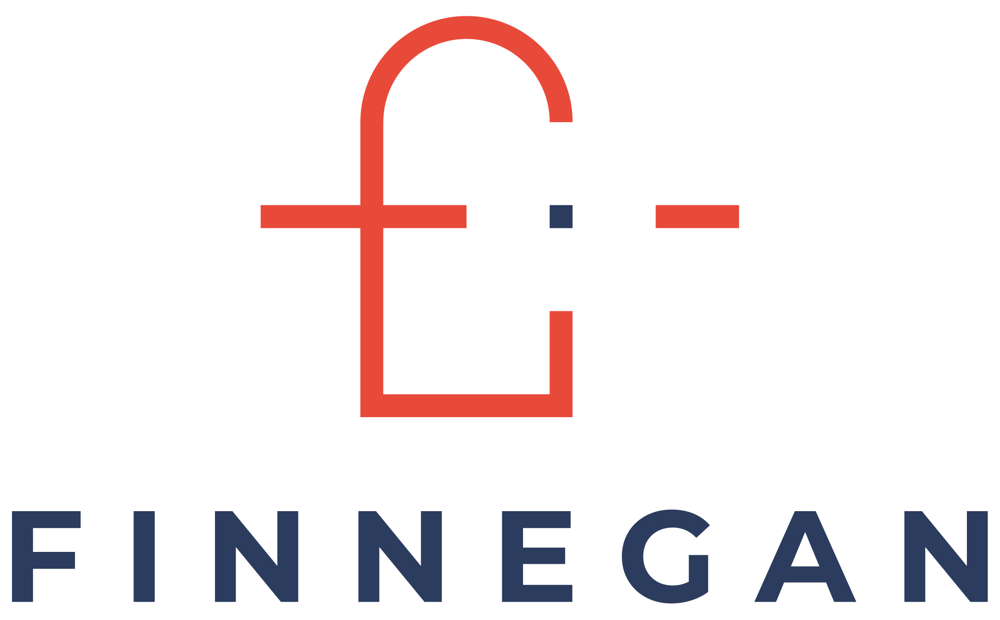

Sommaire
Le conseil en IT et le recrutement en ESN
(Septembre 2023 - Février 2024) - Bordeaux
En tant que Digital Sales Manager pour l'offre IT du cabinet de conseil eXalt j'ai porté une triple casquette : Recrutement, Commercial et Management. En contact direct avec des clients du secteur bancaire, j'ai exclusivement recruté des profils de développeurs JAVA avec différents niveaux de séniorité.
- Prospection clients via l'approche directe
- RDV clients principalement en présentiel
- Soucring sur les job boards : LinkedIn, APEC et Welcome to the Jungle
- 20 entretiens candidats par semaine
- Envoi et coaching des candidats pour les soutenances auprès du client
Au delà de l'aspect de consultant 360 (recruteur et commercial) que j'avais déjà pu expérimenter, j'ai pu au cours de cette expérience découvrir l'aspect managerial du recrutement.
En effet, je ne me contentais pas de recruter des consultants mais aussi de les accompagner sur leur onboarding, et d'organiser des points réguliers avec eux sur leur épanouissement au sein du cabinet, leurs envie d'évolution, les différents problèmes qu'ils pouvaient rencontrer, etc.
Ceci a consolidé les compétences RH que j'ai pu acquérir auparavant. Le fait d'avoir en quelque sorte une relation de confiance privilégiée avec les candidats, qui venaient d'effectuer une grande partie du processus de recrutement en ma compagnie, m'a permis de ressentir la connexion humaine qui m'anime dans ce métier. Plus qu'un simple process d'embauche, il s'agit de créer un lien avec le candidat pour pouvoir comprendre et anticiper ses besoins au maximum. C'est un sentiment agréable d'avoir pu aider quelqu'un à trouver un environnement dans lequel il se sent en confiance, ainsi que de développer le lien au travers du suivi. On pourrait presque finir par ne plus le considérer comme un consultant que l'on manage, mais comme un ami que l'on accompagne...
Cliquez ici pour connaître ce que j'ai fait entre Mai et Septembre 2023 !
Finegan
Introduction au monde du conseil
(Janvier 2023 - Mai 2023) - Paris
Dans ce nouvel environnement qu'est celui du conseil, je ne suis plus consultant en recrutement mais Talent Acquisition Manager.
Cela se différencie principalement par le fait que je n'avais alors plus de contact direct avec les clients. Les besoins étaient définis par les ingénieurs d'affaires ainsi que les directeurs de chaque offre. C'est avec eux que j'échangeais régulierement pour connaître les stratégies de recrutement en cours ainsi que les profils à sourcer.
Finegan est divisé en trois entités : Finegan Advisory, Finegan Solutions et Finegan Expertises. J'intervenais pour le recrutement des deux premières entités.
Profils recrutés pour Finegan Advisory (Secteur Banque & Assurance) :
- Consultant en Risques de Crédit
- Consultant en Risques Opérationnels
- Directeur pour l'offre Risques Cybersécurité
Profils recrutés pour Finegan Solutions (Secteur IT & Industrie) :
- Consultant Data Engineer
- Consultant Data Scientist
- Product Owner
En plus des missions continues de recrutement comme le sourcing et les entretiens (6 entretiens par semaine), j'occupais également un certain nombre de responsabilités sur les missions RH :
- Gestion de relations entreprises-universités :
approche, prise de rdv, participation aux salons et forums - Enquêtes internes sur l'épanouissement de toute l'équipe interne
- Organisation et présentations de webinars sur des sujets comme la parentalité ou encore l'équilibre entre vie professionnelle et personnelle pour les consultants
- Veille RH puis rédaction d'articles sur l'actualité RH dans les cabinets de conseils et dans le monde du travail de manière générale, afin de soumettre des idées à la direction.
Recrutement IT pour start-ups et petits groupes
(Septembre 2022 - Décembre 2022) - Paris
Désireux de continuer d'exercer en tant que Consultant en Recrutement, j'ai alors découvert le secteur des technologies d'informations (IT).
C'est un secteur rempli de challlenges pour le recrutement, car il est extrêmement pénurique. Les candidats sont démarchés par énorméments de cabinets, d'ESN ou de recruteurs internes aux entreprises. De plus, ce large panel de choix qui s'offre à eux leur permettre de négocier des contrats avec des niveaux de salaire assez hauts. Il faut donc non-seulement s'aligner avec ce niveau de salaire mais aussi pouvoir les recruter rapidement afin qu'ils ne se dirigent pas vers une autre offre au cours du processus.
Un des plus grands défis du poste dans ce secteur est de bien faire comprendre cela aux clients. Que ce soit au niveau du salaire ou au niveau de la qualité du process, il va de la responsabilité du consultant de s'assurer que le client saure suffisament nous faire confiance pour écouter nos recommandations et s'adapter à un marché tendu.
Profils recrutés :
- Développeurs Python
- Testeur QA
- Lead Développeur JAVA
- Chef de Projet
Cette expérience a été la plus formatrice pour moi en terme de qualités commerciales. Dés mon arrivée, j'ai du me construire mon porte-feuille clients moi-même via la prospection en approche directe. Avec l'obtention des numeros de téléphone des CTO et responsables RH des groupes visés grâce à l'extension Kaspr, c'était également un défi de pouvoir se présenter de manière à donner confiance auprès de jeunes groupes ne s'attendant pas forcément à recevoir ce genre d'approches directes. Néanmoins, j'ai pu démarcher 2 start-ups, ainsi qu'une PME.
Semaine type :
- Soucring sur les job boards LinkedIn et Welcome to the Jungle
- 10 entretiens candidats
- 30 appels de prospection client
- 3 RDV clients
Première expérience en recrutement, pour l'industrie
(Mars 2022 - Août 2022) - Luxembourg
Cette expérience est la plus chère à mon parcours. Elle a été le terrain de mes premiers pas en tant que Consultant en Recrutement.
Dans ce stage qui m'a formé à ce métier, j'ai d'abord appris à rechercher des candidats pertinents sur les job boards grâce aux opérateurs boléens, puis à mener des entretiens de motivation et présentation.
J'ai ensuite été formé à l'approche commerciale avec de la prospection et des RDV clients au cours desquels avaient lieux la définition des besoins et la stratégie de recherche, ainsi qu'une phase de négociation sur la marge rapportée au cabinet.
Grâce à cette formation de qualité par le leader mondial du recrutement, j'ai pu vite devenir autonome sur les tâches de ce que l'on appelle un Consultant 360 :
- Visites client et écoute de leurs besoins (2 par semaine)
- Publication de posts LinkedIn concernant les positions ouvertes chez le client
- Recherche des profils souhaités par le client et démarchage via LinkedIn
- Rencontres et entretiens avec les candidats (6 par semaine)
- Accompagnement des candidats lors du processus de recrutement (coaching)
Le secteur pour lequel j'étais responsable au sein du cabinet était celui de l'Industrie. J'ai du rapidement apprendre les différentes facettes de nombreux métiers industriels, mais surtout comprendre l'évolution du marché et le contexte de recherche du côté des candidats afin de pouvoir identifier ce qui les motiverait à rejoindre une de nos entreprises clientes. C'est là que j'ai pleinemet pris conscience du rôle "médiateur" du consultant. Il va chercher à accorder les besoin du candidat avec ceux du client en comprenant profondement chacuns des deux contextes de recherches, puis communicant sur les points de ralliement aux deux parties.
Profils recrutés :
- Technicien de Maintenance en Plasturgie
- Ingénieurs Mécaniciens
- Ingénieur Automatisme et Electricité